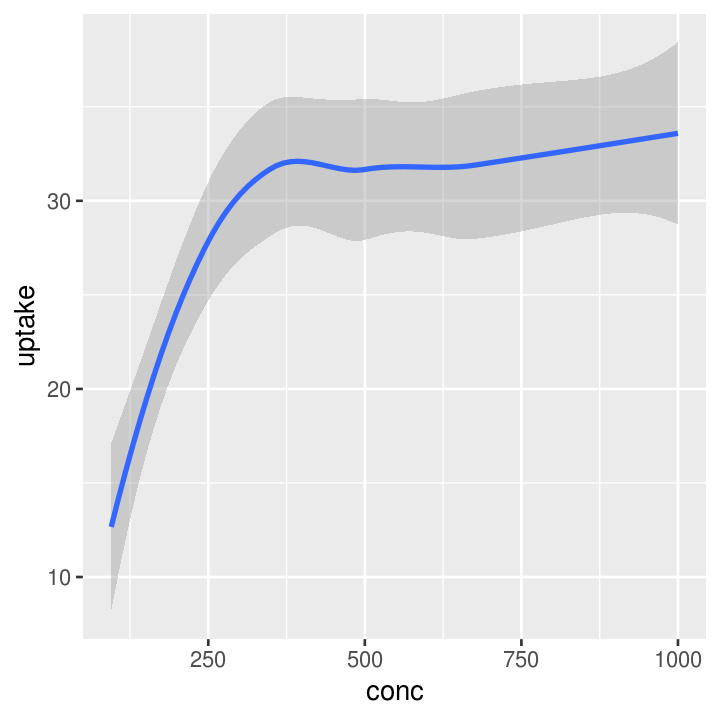
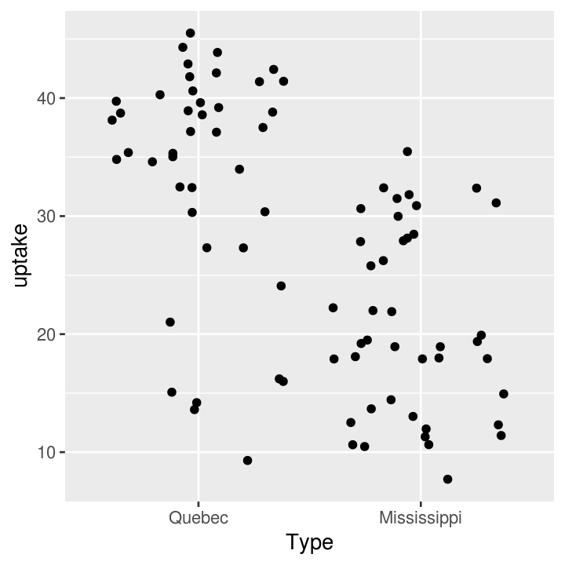
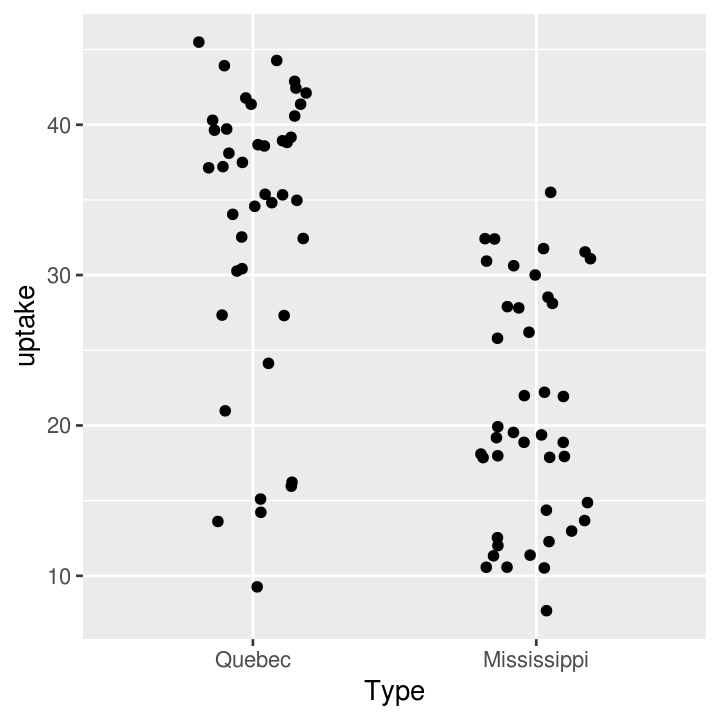
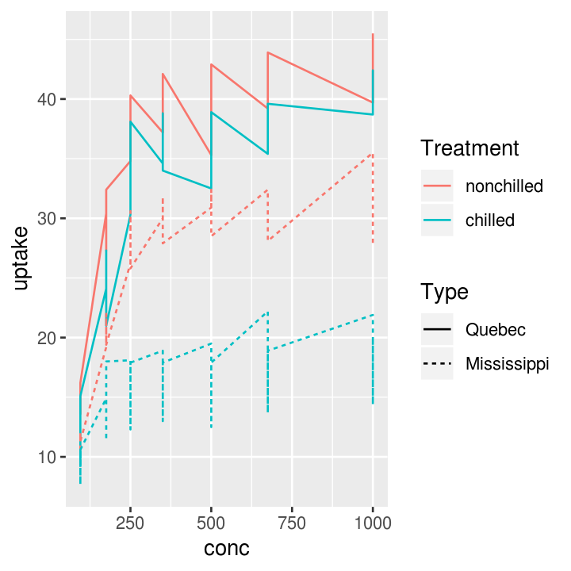
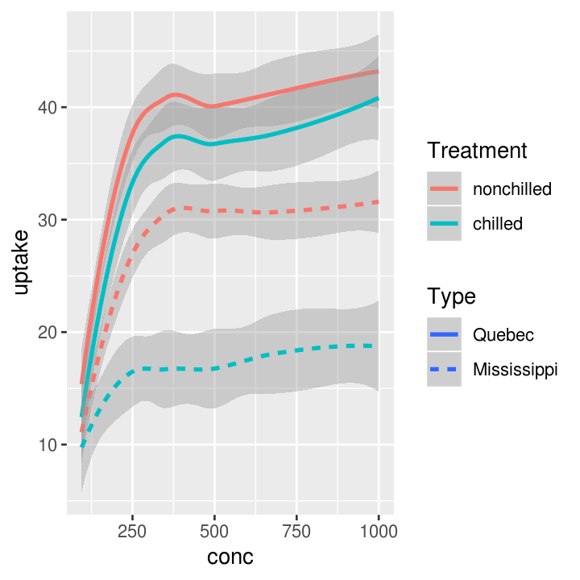
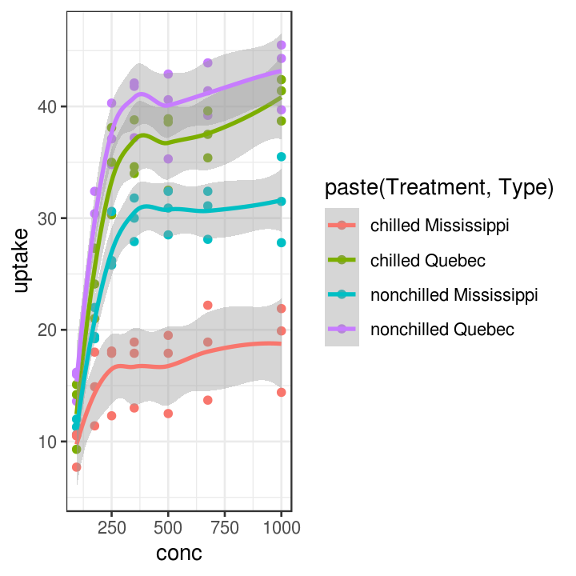

Introduction to visualising and plotting your data using ggplot2
Session details
- Date of session: 19 Oct, 2018
- Instructor: Luke W. Johnston
- Session level: Beginner
- Part of the “Beginner Series”
Package to install:
Objectives
- To become aware of the powerful features of ggplot2.
- To learn about some of the fundamentals of easily creating amazing graphics.
- To know about some resources to continue learning.
At the end of this session, you will achieve this objective by creating a fairly simple, visually-appealing graph that shows:
- At least three data values, ie. “aesthetics” or
aes(), such as what to put on the x-axis, the y-axis, and or usingcolourorsize. - At least two layers, ie “geometries” or
geom_, such as points, lines, or boxplots. - That has clearly labelled x and y axes, ie.
labs(). - That has some changes to the look and feel of the plot, ie.
theme(), so that it is publication ready.
Resources for learning and help
For learning:
- R for Data Science
- Data visualisation and Graphics for communication chapters
- ggplot2 package documentation
- ggplot2 cheatsheet
- DataCamp (paid) online course on data visualistion
For help:
- StackOverflow for ggplot2
- Using within RStudio help using
?(such as?geom_pointor?theme) - ggplot2 package documentation
Quickly get familiar with data to plot
For this session we will be using the CO2 dataset. Here is some code to get a sense of the data.
# Variables
names(CO2)
#> [1] "Plant" "Type" "Treatment" "conc" "uptake"
# General contents
str(CO2)
#> Classes 'nfnGroupedData', 'nfGroupedData', 'groupedData' and 'data.frame': 84 obs. of 5 variables:
#> $ Plant : Ord.factor w/ 12 levels "Qn1"<"Qn2"<"Qn3"<..: 1 1 1 1 1 1 1 2 2 2 ...
#> $ Type : Factor w/ 2 levels "Quebec","Mississippi": 1 1 1 1 1 1 1 1 1 1 ...
#> $ Treatment: Factor w/ 2 levels "nonchilled","chilled": 1 1 1 1 1 1 1 1 1 1 ...
#> $ conc : num 95 175 250 350 500 675 1000 95 175 250 ...
#> $ uptake : num 16 30.4 34.8 37.2 35.3 39.2 39.7 13.6 27.3 37.1 ...
#> - attr(*, "formula")=Class 'formula' language uptake ~ conc | Plant
#> .. ..- attr(*, ".Environment")=<environment: R_EmptyEnv>
#> - attr(*, "outer")=Class 'formula' language ~Treatment * Type
#> .. ..- attr(*, ".Environment")=<environment: R_EmptyEnv>
#> - attr(*, "labels")=List of 2
#> ..$ x: chr "Ambient carbon dioxide concentration"
#> ..$ y: chr "CO2 uptake rate"
#> - attr(*, "units")=List of 2
#> ..$ x: chr "(uL/L)"
#> ..$ y: chr "(umol/m^2 s)"
# Quick summary
summary(CO2)
#> Plant Type Treatment conc
#> Qn1 : 7 Quebec :42 nonchilled:42 Min. : 95
#> Qn2 : 7 Mississippi:42 chilled :42 1st Qu.: 175
#> Qn3 : 7 Median : 350
#> Qc1 : 7 Mean : 435
#> Qc3 : 7 3rd Qu.: 675
#> Qc2 : 7 Max. :1000
#> (Other):42
#> uptake
#> Min. : 7.70
#> 1st Qu.:17.90
#> Median :28.30
#> Mean :27.21
#> 3rd Qu.:37.12
#> Max. :45.50
#> Exercise: Choose a dataset and check it out
There are several exercises in this session. Choose one of the below datasets and use that dataset for all later exercises.
For complete R beginners, use:
mpg
For more confident R users, use one of these:
economicsdiamondsmsleeptxhousing
Check out the contents of the dataset you choose using:
Basic structure of using ggplot2
ggplot2 uses the “Grammar of Graphics” (gg). This is a powerful approach to creating plots because it provides a consistent way of telling ggplot2 what to do. There are at least three aspects to using ggplot2 that relate to the grammar:
- Aesthetics,
aes(): How data should be mapped to the plot. Includes what to put on x axis, on the y axis, colours, size, etc. - Geometries,
geom_: The visual representation of the data, as a layer. This tells ggplot2 how to show the aesthetics. Includes points, lines, boxes, etc. - Themes,
theme_ortheme(): How the plot should look like. Includes the text, axis lines, etc.
To maximise the power of ggplot2, make heavy use of autocompletion. You can do this by typing, for instance, geom_ and then hitting the TAB key to see a list of all the geoms. Or after typing theme(, hit TAB to see all the options inside theme.
Visualise 1-dimensional (x axis) data
There are many ways of showing plotting continuous (e.g. weight, height) variables in ggplot2. For discrete (e.g. terrain type: mountain, plains, or sex: woman, man) variables, there is really only one way.

Exercise: One variable plots
Time: 10 min
# put name of dataset below
names(___)
# use dataset with one continuous variable
ggplot(___, aes(x = ___)) +
# finish the geom to create either a histogram, freqpoly, or density layer
___
# use dataset with one discrete variable
ggplot(___, aes(x = ___)) +
# finish the geom to create a bar layer
___Visualise 2-dimensional (x and y axis) data
You can of course include data on the y axis too! This is usually what you use graphs for! There are many more types of “geoms” to use for having data on both axes, and which one you choose depends on what you are trying to show and what the data is like. Usually you put the variable that you can influence (the independent variable) on the x axis and the variable that responds (the dependent variable) on the y axis.
# Using continuous data
co2_plot_nums <- ggplot(CO2, aes(x = conc, y = uptake))
# Standard scatter plot
co2_plot_nums + geom_point()
# Runs a smoothing line with confidence interval
co2_plot_nums + geom_smooth()
#> `geom_smooth()` using method = 'loess' and formula 'y ~ x'
# Using mixed data
co2_plot_mixed <- ggplot(CO2, aes(x = Type, y = uptake))
# Standard boxplot
co2_plot_mixed + geom_boxplot()

Exercise: Two variable plots
Time: 8 min
# use dataset with two continuous variables
ggplot(___, aes(x = ___, y = ___)) +
# finish the geom to create either a point, line, hex, smooth, or abline layer
___
# use dataset with one continuous and one discrete variable
ggplot(___, aes(x = ___, y = ___)) +
# finish the geom to create either a boxplot, jitter, or col layer
___Using a third (or more) variable
You can also add an additional dimension to the data by using other elements (colours, size, transparency, etc) of the graph to represent another variable. This is NOT the same thing as using 3-dimensionl (aka x, y, z axis) plots, which should be avoided unless absolutely necessary! Using colours to represent discrete groups is useful, or for using shading to represent a range in continuous values.
co2_plot_colour <- ggplot(CO2, aes(x = conc, y = uptake, colour = Treatment))
# Scatter plot
co2_plot_colour + geom_point()
# Smoothing
co2_plot_colour + geom_smooth()
#> `geom_smooth()` using method = 'loess' and formula 'y ~ x'Or add a fourth variable.


# Smoothing plot
co2_plot_colour + geom_smooth(aes(linetype = Type))
#> `geom_smooth()` using method = 'loess' and formula 'y ~ x'
And it’s easy to add another geoms!
# Three layers
co2_plot_colour +
geom_point(aes(shape = Type)) +
geom_line(aes(linetype = Plant)) +
geom_smooth(aes(size = Type))
#> Warning: Using size for a discrete variable is not advised.
#> `geom_smooth()` using method = 'loess' and formula 'y ~ x'Exercise: Three variable plots
Time: 8 min
Axis titles and the theme
Let’s get to making the plot prettier. There are many many options to customise the plot using the theme().
co2_plot_prettying <-
ggplot(CO2, aes(
x = conc,
y = uptake,
colour = paste(Treatment, Type)
)
) +
geom_point() +
geom_smooth()
# Some pre-defined themes
co2_plot_prettying + theme_bw()
#> `geom_smooth()` using method = 'loess' and formula 'y ~ x'
pretty_plot <- co2_plot_prettying +
theme_classic() +
scale_color_brewer(name = "Treatment and origin", palette = "Dark2") +
# Find this information in ?CO2
labs(x = "CO2 concentration (mL/L)",
y = "CO2 update rate (umol/m2)") +
theme(
# all axis lines, must use element_line
axis.line = element_line(colour = "grey50", size = 0.5),
# all axis text, must use element_text
axis.text = element_text(family = "sans"),
# all axis tick marks, use element_blank to remove
axis.ticks = element_blank()
)
pretty_plot
#> `geom_smooth()` using method = 'loess' and formula 'y ~ x'Exercise: Change theme items of the plot
Time: 10 min
# use dataset with two continuous variables
ggplot(___, aes(x = ___, y = ___)) +
# finish the geom to create either a point, smooth, or line layer
___ +
# choose either a minimal, dark, light, or classic defined theme
___ +
theme(
# choose colours such as red, blue, black, grey, yellow, green
# choose size from 2 to 8
panel.grid.major = element_line(colour = ___, size = ___),
# choose family such as sans, serif, Arial, Times New Romans
axis.text = element_text(colour = ___, size = ___, familyl = ___)
)Saving the plot
Now, if you want to save the plot, you can do that pretty easily!
Exercise: Putting it all together
Time: Until end of session
- Create a ggplot, choosing three variables for the
aes(), one for:- the
x-axis - the
y-axis - either
size,colour,alpha,stroke, orfill
- the
- Create two
geom_layers. The geom you use will depend on the variables and the specificaes()you choose above. - Properly label the x and y axis with
labs(). - Choose a pre-defined theme (
theme_) and make two changes to it usingtheme(). - Save the plot with
ggsave().
This work is licensed under a Creative Commons Attribution 4.0 International License. See the licensing page for more details about copyright information.